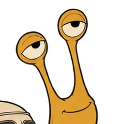

Køretime 1 byzone
Lindevej
Tid0:00.0
Fejl0
V
BAGUD
H
Telefonen i holderenNy besked
Besked
Du kigger ned på telefonen
Sneglen din guideKør, når du er klar. Jeg siger først noget, når det går galt.0
D km/t
50
Gas og bremse ny tur hver gangKør en tur
Kør en tur
med Sneglen.
Du kører Nordic GT, uanset hvad du har valgt i Min bil. Hver tur er ny. Læs skilte og afmærkning ved hvert kryds, og hold øje med vejen.
- WGas
- MellemrumBrems
- ADStyr
- FRFrem og bak
- ZCBlink
- QEKig til siden
- HDyt

NY START SAMME REGEL
Køretimen er slut.
Øv reglerne i missionerne.
Vi kunne ikke vise 3D-udsynet
Forruden er sort, fordi 3D-visningen ikke startede. Prøv en anden browser, eller slå hardwareacceleration til.